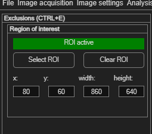
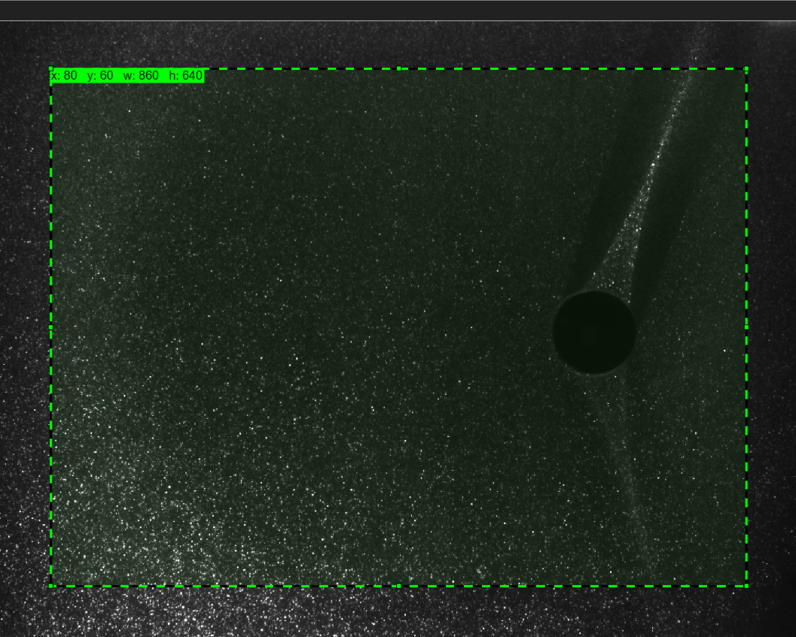

Region of interest (ROI)
A region of interest (ROI) restricts the entire analysis to a single rectangular area of the image — everything outside it is cropped away before any processing happens. It's the simplest way to speed up an analysis or ignore irrelevant parts of a large image.
Opening the panel
Choose Image settings → Define region of interest (ROI) (Ctrl+E). The panel shows a status readout (ROI inactive / ROI active), draw/clear buttons, and four numeric fields for exact placement.
If you don't set a ROI, the whole image is analysed — fine for most cases.

Setting a ROI
- Click Select ROI. A green, editable rectangle appears on the image.
- Drag it into place and resize it by its corner/edge handles. A live
label shows the current
x,y,w,has you drag. - Alternatively (or for pixel-exact placement), type values directly into the x:, y:, width: and height: fields.
- Click Clear ROI to remove it and analyse the full image again.

One ROI for the whole session
Unlike masks, there is only ever one ROI, and it's rectangular. It applies to
every frame in the session — you can't set a different ROI per frame.
ROI vs. masking — which should I use?
Both restrict what gets analysed, but they work very differently, and knowing the difference saves confusion:
| Region of interest | Masking | |
|---|---|---|
| Shape | One rectangle only | Any shape, any number of them (freehand, circle, rectangle, polygon, automatic) |
| Per frame? | No — one ROI for the whole session | Yes — masks are per-frame (though easy to copy to many frames) |
| How it works | Crops the image before any processing — pixels outside it are never touched, which is also faster | Processes the whole image, then sets the masked pixels' results to NaN
afterwards |
| Use it for | Cutting a large image down to the area you actually care about (e.g. ignoring wide borders or an unused part of the field of view) | Excluding specific obstacles, reflections or invalid regions — including holes inside the area you keep (see the masking page's overlapping-masks recipe) |
They combine
A ROI and masks are independent and can be used together: crop the image to the relevant
area with a ROI, then use masks to exclude specific objects within it.
Use it to cut away the unused parts, not the flow
A ROI is a good way to speed up analysis on a large image with wide unused borders or an
irrelevant part of the field of view — but don't crop away flow structure you actually
need. If you're unsure whether a region matters, leave it in and use a
mask instead if it turns out to be a problem.